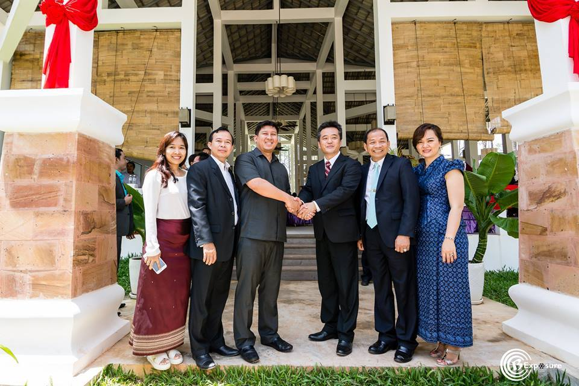
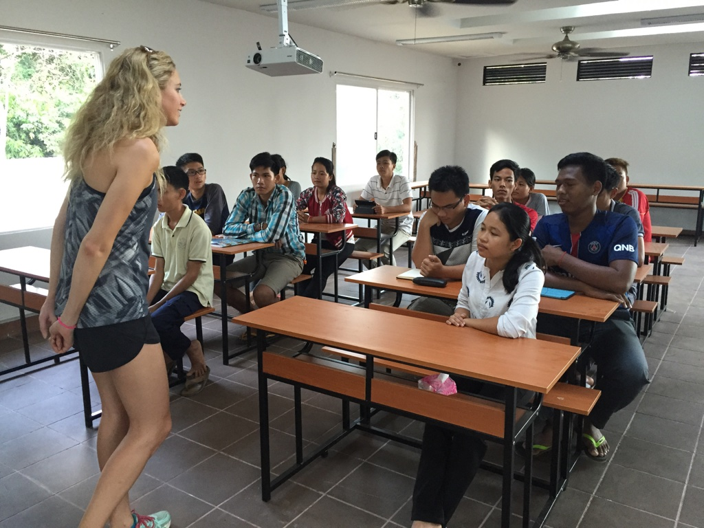
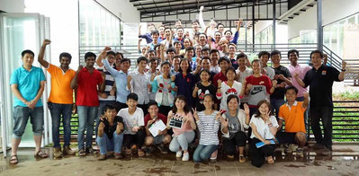
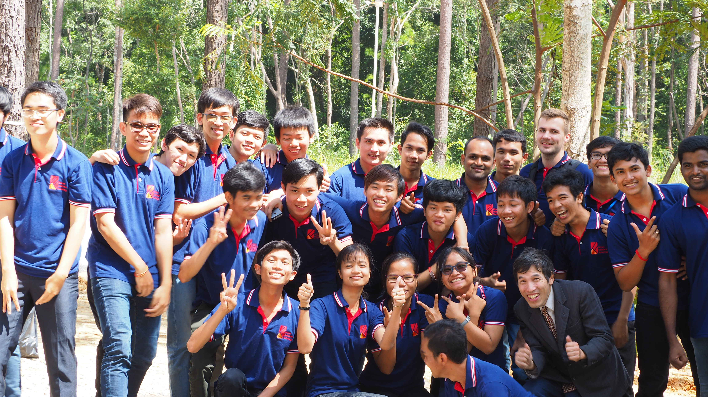
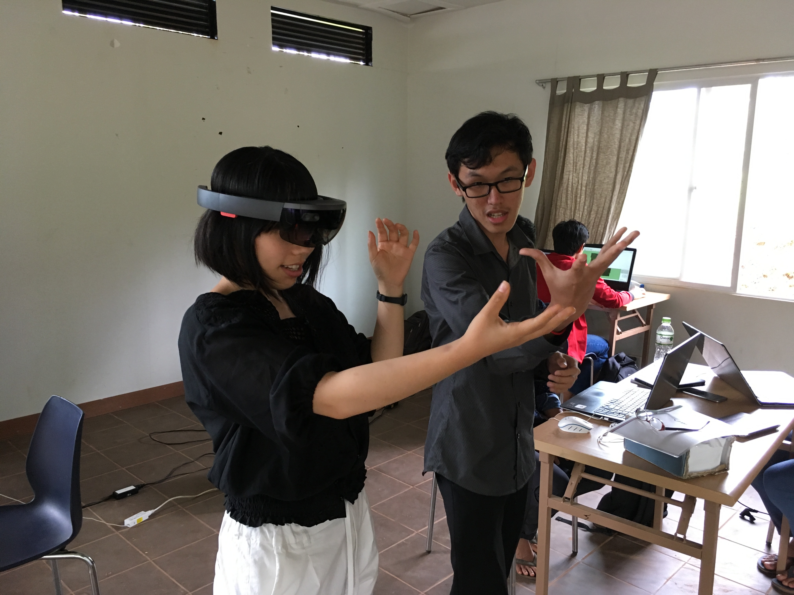
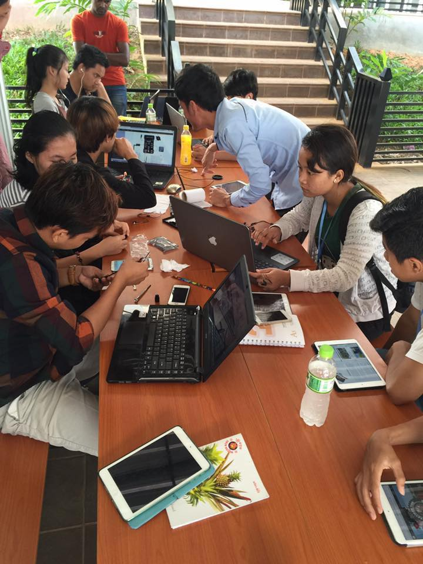
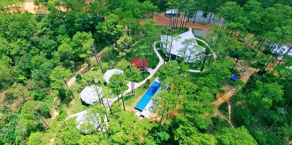
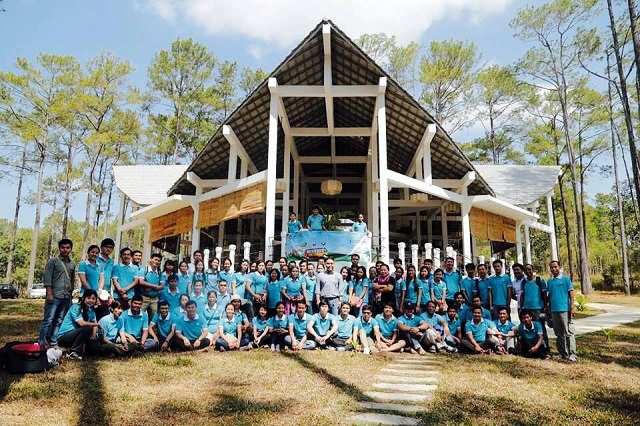
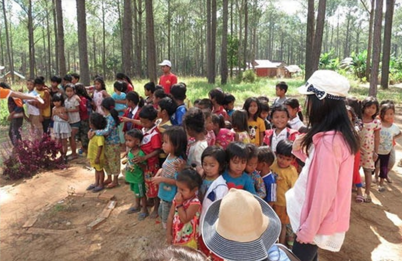
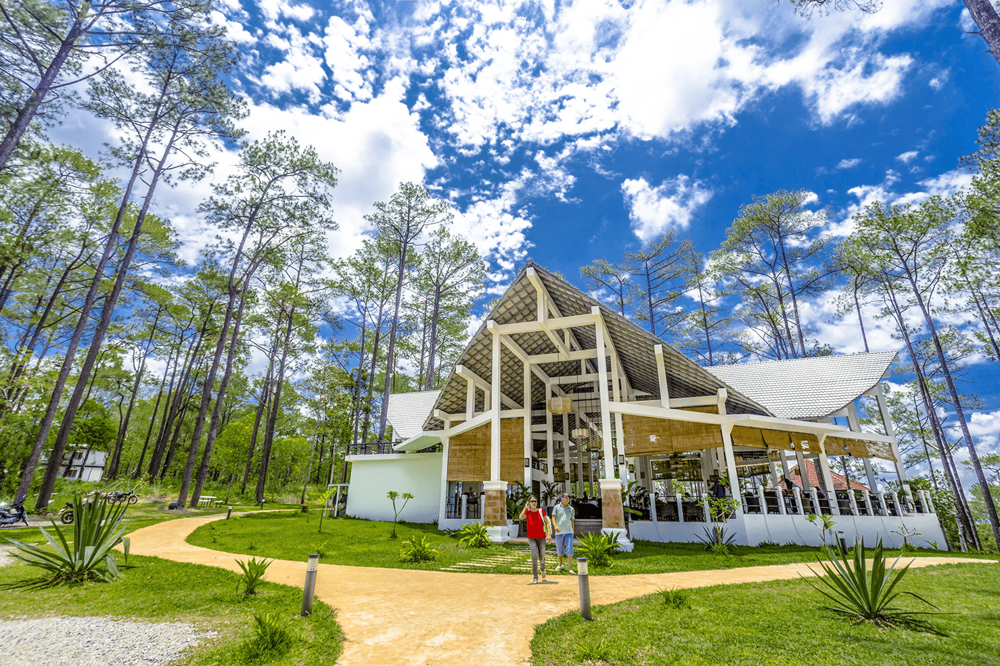

- 学費について
-
キリロム工科大学は全寮制の４年生大学です。学費・食費・生活費全て合わせても４年間で500万円、自宅から国立大学に通った場合と同じコストしかかかりません。学生支援機構の奨学金で全てが賄えてしまうので両親に経済的な負担をかけません。しかも卒業後に150万円から300万円の卒業時奨学金がもらえます。また、キリロム工科大学の奨学金提供企業で４年間働けばさらに200万円がもらえます。つまり、卒業後４年で学生支援機構全ての奨学金が返済できてしまう驚くべき仕組みです。
 - 英語について
-

キリロム工科大学は英語が苦手な国に育った優秀な若者に英語でITを教える学校です。高校卒業時点で英検2級程度の能力があれば英語の力はそれ以上は問われません。授業は全て英語ですが、全て録音されているので何度でも授業を聞きなおすことができます。学生寮は4人部屋ですので毎日授業の振り返りをすることができます。卒業時には米国のIT企業で働けるレベルの英語力は身につきます。
- 世界で活躍するとは
-
今高校三年生の皆さんが大人になる頃にはグローバル化は今以上に進みます。もちろん日本語だけでも仕事も生活も可能ですが、英語ができれば重要な仕事を任され高い給料をもらえる時代になるでしょう。現在の世界産業革命4.0の真っ只中にありますが、世界を席巻しているFAANG(*)やBAT(**)にいつでも就職できる能力を大学時代に得てから自分がやりたいことを探しましょう。キリロム工科大学は英語が苦手な国のリーダーがグローバルカンパニーに入れるような教育をしています。
*FAANG : 米国を席巻するネット企業Facebook, Apple, Amazon, Netflix, Googleの頭文字を取ったもの
**BAT : 中国を席巻するネット企業Baidu, Alibaba Tencentの頭文字を取ったもの  - キリロム工科大学では何をどのように学ぶのですか？
-
 
キリロム工科大学は日本の大学制度の中ではなかなか実現できない教育方法を採用しています。日本や世界の未来の理想の大学のあり方を探求していて、教育制度がまだ整っていないカンボジアで日本やカンボジアの生徒を対象に様々なトライを行っています。大学は設立後4年目になりますがカンボジアのIT教育においては大きな成功を収めていて、ハッカソンなどのコンペでは初出場から５回全て優勝しています。（１つはカンボジアで１位）その教育方法はいくつものアイデアがちりばめられていますが、英語が苦手な高校生がグローバルITカンパニーで働けるようにデザインされています。一例を挙げますと学校内に設置された仮想ベンチャー企業でインターンシップを４年間行う。１年生の英語の授業はTEDを利用する。iPadを配布し全ての授業は録音されていてなんども聞くことができる。インターンシップの素材は先端ベンチャー企業から集め結果を全学生がシェアをするなどです。我々の学生の卒業生に対しては就職先企業が新入社員教育をする時間は大幅に削減されます。
- キリロムの森とは
-
カンボジアの軽井沢的な位置付けにある高原で1960年代に日本とカンボジア政府が共同で高原都市を開発しようと計画されていた場所です。カンボジアの内戦後は動物も減り、人が住んでいない場所となっていますが、その場所をカンボジア人にとっても世界にとってもステキな場所にしようというプロジェクトがvキリロムネイチャーシティです。
 - キリロムの森になぜ街を作るのか？
-
 
キリロムは避暑地としてはカンボジアNo.1のロケーションにあります。環境に配慮した高原都市になるべき場所です。そこに、マイクロソフト登場後、インターネット登場後、フェイスブック登場後に出来た街らしく最先端のITを使って自然と融合した街を目指そうとしています。カンボジアはまだ貧しく一般国民が余暇を楽しむ段階にありません。街のスタート時は学園都市としてカンボジアの発展に寄与し、カンボジアの発展とともに変わっていく街を目指します。人材の層が薄いカンボジアの次世代のリーダーであるキリロム工科大学の学生がインターンシップでvキリロムネイチャーシティを作り上げることができれば教育的にも素晴らしいことだと考えています。
- vキリロムネイチャーシティのコンセプトとは
-
人生の大切な数年をここで過ごし、新たな人生へと旅立っていく場所と定義されています。キリロム工科大学の大学生だけでなく、自分探しをしている若者やリタイアしたばかりの初老のお年寄り、そしてキリロムで働く先生方のご家族もその後の良い人生を目指して毎日学んでいます。

- 学長メッセージ
キリロム工科大学は日本人の考え方によって設立されましたが、日本に同じ学校はありません。
日本人にとっての未来の大学です。日本にこんな大学があったらいいなというコンセプトを具現化した大学です。
ひょっとすると世界でもユニークな大学かもしれませんが、大学が有名になるかどうかは学生の皆さんが成功するかどうかにかかっています。我々は学生に実戦の挑戦の場を提供し、皆さんの成功をサポートします。
現在は産業革命2.0が始まったばかりです。インターネットができ、フェイスブックができ、人工知能ができました。これまでの仕事の50％がなくなり、新しい仕事がどんどんできます。
みなさんがこれからどんな仕事に就くのか？夢はあると思いますがまだ決めないでください。新しいチャンスをどんどん掴んで行ってください。
［ 我々の大学の使命 ］
皆さんが成功することで大学が成功します。
我々の学校は決してプログラミングスクールではありません。皆さん誤解していますが我々の学校は産業革命2.0をマネージする人材を育てています。皆さんがベンチャー企業を起こしてもいいし、大企業の中でイノベーションを起こしても構いません。産業革命2.0はIT技術がもたらしていることは変わりません。
皆さんがこの大学を卒業するころには産業革命を起こせる人材になれることはお約束します。我々の大学は今は少し変わった大学に見えますが、将来我々の仕組みが世界の主流になるはずです。
ハーバードは世界で最も豊かな人たちが世界を変えようとしています。
我々KITも世界を変えます。世界の底辺から。
Let's Change the WORLD from Bottom of the Pyramid together
- プロフィール
vKirirom Pte. Ltd. 創業者/CEO、A2A Town (Cambodia) 社長、キリロム工科大学学長
早稲田大学、東京工業大学修士卒。アクセンチュアを経て1998年に(株)デジタルフォレストを創業。日本一のアクセス解析ソフトを作り、2009年にNTTコムに事業売却(24億円)。 ASEANに移住し2012年にvキリロム事業をスタート、シリアルアントレプレナー。